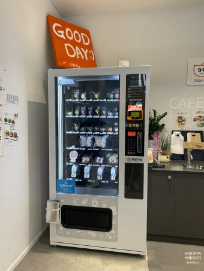

사내 자판기 설치 완료 — 직원용 셀프자판기·스넥/간식자판기로 복지 챙긴 대표님

오늘은 한 회사 사옥 휴게실에 직원용 셀프자판기를 설치하고 왔습니다. 상담 전화를 주신 분이 그 회사 대표님이셨는데, 첫 마디가 이랬습니다. "직원들한테 뭐라도 하나 해주고 싶은데, 뭐가 좋을까요?"
요즘 사내 복지로 사내용 스넥자판기·간식자판기를 놓는 회사가 부쩍 늘었습니다. 큰돈 들이지 않고도 직원들이 매일 체감하는 복지라서요. 오늘 현장이 딱 그런 경우였습니다.
왜 사내 자판기를 놓기로 하셨나
대표님 말씀으로는, 사옥이 큰길에서 조금 들어와 있어 편의점까지 걸어서 왕복 10분이 넘는다고 합니다. 직원들이 커피 한 잔, 간식 하나 사러 나갔다 오면 시간도 걸리고 눈치도 보인다는 거죠. 야근하는 날엔 아예 살 곳이 없고요.
그래서 휴게실에 자판기를 놓자는 결론이 났습니다. "복지랍시고 거창한 거 말고, 직원들이 진짜 매일 쓰는 걸로 하고 싶다"고 하시더군요. 설치를 다니다 보면 이런 대표님들이 꽤 계십니다.
어떻게 구성했나 — 셀프자판기 + 간식자판기
휴게실 한쪽 벽면에 셀프자판기를 세팅했습니다. 구성은 이렇습니다.
• 음료자판기·커피자판기 — 캔커피·생수·이온음료. 아침 출근길과 점심 후에 가장 많이 나갑니다.
• 스넥자판기·간식자판기 — 과자·초코바·컵라면. 야근·오후 3시 무렵 수요가 확실합니다.
• 냉동자판기 — 여름이라 아이스크림도 함께. 이건 대표님이 직접 넣자고 하셨습니다.
결제는 카드·삼성페이·카카오페이·네이버페이·QR 전부 됩니다. 현금 안 들고 다니는 요즘 직원분들한테는 이게 중요합니다. 사원증이나 별도 앱 없이 그냥 카드 대면 끝이라 쓰는 데 걸림돌이 없습니다.
회사가 일부 부담하는 방식도 됩니다
여기서 대표님이 제일 반가워하신 부분입니다. 자판기는 가격을 회사가 정할 수 있습니다. 시중가보다 낮게 책정하고 차액을 회사가 부담하는 방식이죠.
이 회사는 캔음료를 시중가의 절반 정도로 맞췄습니다. 직원 입장에선 "회사가 반 내주는 자판기"가 되고, 회사 입장에선 부담은 크지 않은데 복지 체감은 확실한 구조가 됩니다. 완전 무료로 돌리는 곳도 있고, 그냥 정상가로 두고 편의만 제공하는 곳도 있습니다. 회사 사정에 맞춰 정하시면 됩니다.
설치는 반나절이면 끝납니다
설치기사 입장에서 사내 자판기는 어려운 현장이 아닙니다. 확인하는 건 콘센트 위치, 바닥 수평, 사람 동선 세 가지뿐입니다. 이번 현장도 휴게실 콘센트가 바로 옆에 있어서 반나절 만에 마무리했습니다.
재고 보충도 걱정 안 하셔도 됩니다. 매출·재고는 앱으로 원격 확인되고, 직접 채우기 번거로우면 위탁운영으로 맡기셔도 됩니다. 총무팀 담당자분께 앱 사용법까지 알려드리고 나왔습니다.
이런 회사·기관에 잘 맞습니다
사내 자판기는 회사 자판기·공장 자판기·오피스텔 자판기는 물론 관공서 자판기·구청 자판기·주민센터 자판기, 병원·약국, 학교·대학교자판기·기숙사 자판기·구내식당자판기까지 직원과 이용자가 상주하는 곳이면 어디든 잘 맞습니다. 특히 이런 조건이면 효과가 확실합니다.
① 주변에 편의점이 멀거나 없다 ② 야근·교대 근무가 있다 ③ 휴게실·탕비실 공간이 있다 ④ 직원 수가 20명 이상이다 — 하나라도 해당되면 한 대 놓을 만합니다.
직원 복지 자판기, 상담은 무료입니다
설치비는 무료입니다. 사무실 사진과 휴게실 위치만 알려주시면 어떤 기종·품목이 맞는지, 회사 부담을 얼마로 잡으면 좋은지까지 함께 계산해 드립니다. 무인자판기 구입·구매도 되고, 부담되시면 무인자판기 임대·렌탈로 시작할 수도 있습니다. 개인사업자·법인사업자 모두 진행 가능하고, 세금계산서도 정상 발행됩니다.
"우리 회사에도 될까요?" 하고 편하게 물어보세요. 안 맞는 자리면 안 맞는다고 솔직하게 말씀드립니다. 전국 어디든 방문합니다.
📞 사내 자판기 설치 상담 010-6832-1994